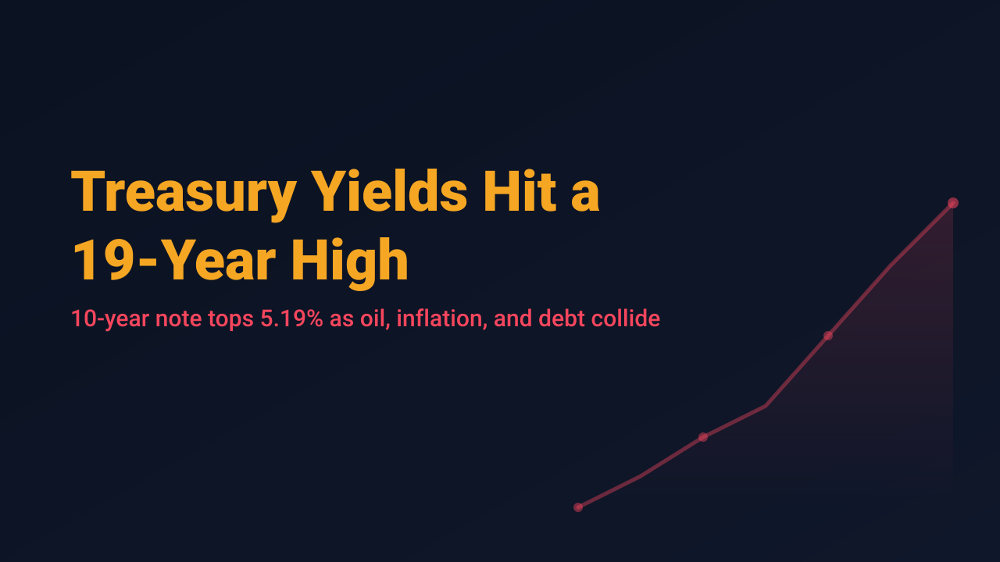
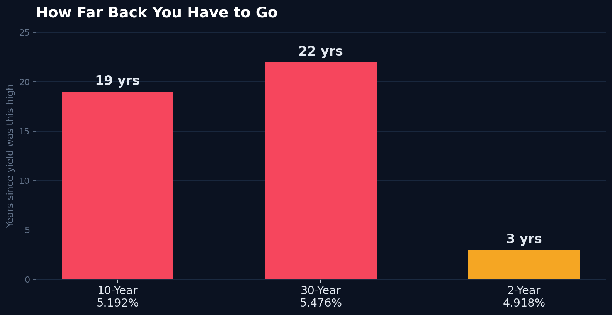

Treasury Yields Hit a 19-Year High as Oil, Inflation, and Debt Collide

The 10-year Treasury yield broke out to 5.192% this week, its highest level since 2007, and it did not get there quietly. On Wednesday the yield spiked 13 basis points to 5.10% in a single session, a move Wolf Street called a "bond bloodbath," before extending further to 5.192% on Thursday, according to TheStreet. The 5-year yield crossed 5% for the first time since 2007 along the way. This is not a slow drift. It is a breakout, and three separate forces are pushing it at once.
The trigger was economic data that was too strong for comfort. The S&P Global flash PMI showed business activity expanding at its fastest pace in more than five years, with survey data pointing to annualized growth near 5%, per Wolf Street's reporting. That kind of strength usually reads as good news, but it landed alongside supply chain bottlenecks Wolf Street described as among the most severe in nearly two decades, and input costs rising at their steepest rate in four years. Fed Governor Michael Barr responded by saying additional tightening looks necessary to bring inflation back to the Fed's 2% target, according to Yahoo Finance. Markets moved fast: odds of an October rate hike jumped from roughly 55% to about 70% in the space of a day, per TheStreet's Thursday coverage.
Layered on top of that is oil. Brent crude has traded as high as $110 a barrel this month on disruptions tied to the Iran conflict, now in its seventh month, with tanker traffic through the Strait of Hormuz still well below prewar levels, according to Fortune. On Thursday, WTI settled near $93.12 and Brent near $104.70, both up on the day. And underneath both of those stories sits a third: U.S. federal debt has climbed past 100% of GDP, and higher yields make that debt more expensive to service. One economist put it plainly to Fortune: rising yields feed fiscal worries, which in turn drive yields higher. That is the kind of feedback loop that does not resolve itself quickly.

The equity market's response has been telling in its own right. Wednesday's session was a genuine risk-off day: the S&P 500 fell 0.73%, the Dow dropped 0.63%, the Nasdaq slid 1.11%, and the Russell 2000 lagged badly at down 1.60%, with more than 72% of individual issues in the red, per TheStreet. Energy was the only S&P sector that gained. By Thursday, though, the indexes had essentially stalled rather than continuing to fall: the S&P 500 closed almost flat at -0.02%, the Dow slipped 0.31%, and the Nasdaq eked out a 0.01% gain even as yields kept climbing. That is a market that took its first hit hard and is now waiting to see whether the yield move is a one-week spike or the start of a longer repricing.
Yield spikes like this one tend to get treated as a single market-wide verdict, and headlines about a 19-year high invite exactly that reading. But a 100-basis-point move in a benchmark rate does not hit every stock the same way, and the bond, oil, and equity markets are all telling slightly different parts of the same story right now. Sorting out which part applies to a specific position is the actual work.